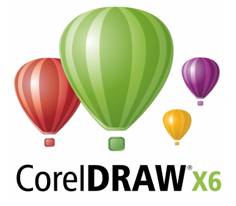

Muhammad Abdullahi Kori

That's me! An aspiring Designer/Developer. I mostly design for the web . I hang around small businesses and individuals to help create quality, expressive and useful stuffs.
I always try to stay in touch with new technologies. But meanwhile, these are some ofthe technologies I use daily.


- 

... and more recently...